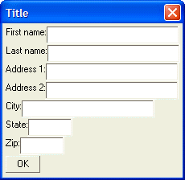
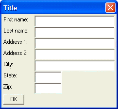

Address Dialog - Column Formatting
Just as one would use the tab character in a word processor to line up columns of data, one would use the '|' directive in an Xdialog box to line up columns of controls.
The following dialog looks ugly because the edit controls do not line up. There is a simple mechanism in UI_DLG_BOX()that is designed specifically for this - columns. Column boundaries are specified by a ?|' character, and should be added between controls you want to line up vertically:
For example, consider the following dialog box:
result=ui_dlg_box("Title",<<%dlg% First name:[.32firstname]; Last name:[.32lastname]; Address 1:[.32address1]; Address 2:[.32address2]; City:[.32City]; State:[State]; Zip:[Zip]; %dlg%) |
This script produces this dialog:

Lesson 3: Address Dialog - No Formatting
Address Dialog - Column Formatting
As you can see, the dialog is ugly because the controls do not line up in a column. Here is the same dialog, but this time the '|' directive is used to line up the columns:
result=ui_dlg_box("Title",<<%dlg% First name:| [.32firstname]; Last name:| [.32lastname]; Address 1:| [.32address1]; Address 2:| [.32address2]; City:| [.32City]; State:| [State]; Zip:| [Zip]; %dlg%) |
This script produces this dialog:

Lesson 3: Address Dialog - Column Formatting
The '|' directive causes all of the text box controls to line up neatly. You can think of this dialog as being comprised of a grid with 2 columns and 8 rows (including the OK button).
While the dialog looks better, it is still not perfect because the OK button is too close to the "Zip" static text control above it. We will see how you can use the blank line directive in the next exercise to correct this. We will also see later in this lesson that there are other ways to address this.
Next
Address Dialog - Adding Blank Lines
Limitations
Desktop applications only.